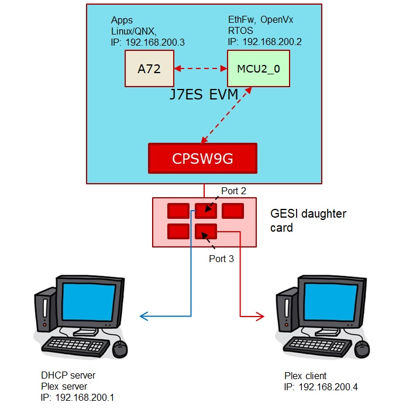
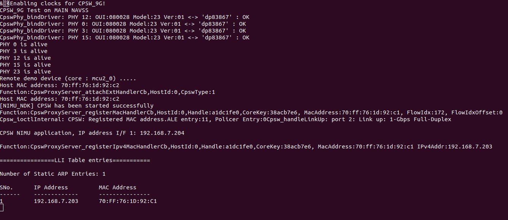
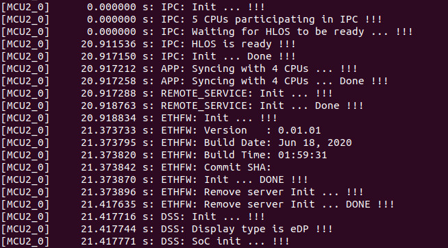

Ethernet firmware is integrated part of vision_apps and enabled by default. One can run all the OpenVx based demos alongside with Ethfw running on CPSW9G IP on J7ES EVM.

Hardware Setup
The below are required to run Ethfw
- J7ES EVM
- GESI daughter card
- Linux machine running DHCP server, this was tested on Ubuntu 18.04 but any version which supports hosting DHCP server would do
- A client machine runnig Linux/Windows with a browser
- A pair of network cables,
- One cable connected to port2 on the GESI card and other end connected to Linux machine
- Second cable connected to port3 on the GESI card and other end connected to client machine
- eDP cable connected to a eDP capable display monitor for running OpenVx demos
- UART cable connected to main UART port on the J7ES EVM
- 12V power supply for the EVM
- SD card
Software Setup
Running the demo (Linux + RTOS) or (QNX + RTOS)
- Build the application and related libraries as mentioned in Build Instructions
- Open UART client like minicom on /dev/ttyUSB0 (instance 0) where Linux and OpenVx logs usually appear and another on /dev/ttyUSB2 for (instance 2) for NDK and Ethfw logs.
- Power on the EVM and let the OS come up. If GESI board is connected then on /dev/ttyUSB2 you will see NDK registrationa and CPSW driver and Ethfw come up.
- On successful boot, it will display R5F IP address and A72 IP address as below,

- Login and navigate to /opt/vision_apps on linux and /ti_fs/vision_apps on QNX, run the ./vision_apps_init.sh script.
- Upon sucessfull completion you will notice the Ethfw log and version as below. You are now ready to run any of the OpenVx applications including DL applications using the SDK.

- To demostrate the switching capabily, on the server share a media file like a video file.
- On the client machine open a brower and connect to the Plex server by typing the URL Eg.
http://192.168.7.202:32400/web/index.html
- Once connection is established you can stream the video file via the J7ES CPSW9G running Ethfw in the background alongside other OpenVx demos.
For QNX after running the vision_apps_init.sh script bring up the CPSW ethernet virtual driver as below,
slog2info -c
slog2info -w
<Press Ctrl+C to come out>
on -C 0 io-pkt-v6-hc -d cpsw9g verbose=0x3ff
dhclient -nw an0
ifconfig
Known Issues
- The GESI card uses the same connector pins as infotainment card so only one of them can be connected
- The GESI card seems to conflict with QSGMII (CPSW2G) board on the J7ES EVM, this is a known issue. To workaround this issue manually unscrew and remove the QSGMII board from J7ES EVM
- With Ethfw enabled by default, if infotainment board is connected it results in HDMI display corruption. eDP to HDMI adaptors also cannot be used with Ethfw enabled. To workaround this issue disable Ethfw if required or switch display to eDP.
- As Ethfw uses NDK and it comes up during boot, it is possible that A72 acquired an IP even before R5. If this happens you will see an error message as below in the Linux UART. To workaround this issue bring down the eth and bring it back again as shown
ifconfig eth1 down
ifconfig eth1 up
How to disable ETHFW
- In file vision_apps_build_flags.mak, set BUILD_ENABLE_ETHFW?=no
- Run "make vision_apps_scrub" prior to re-building
- Note: Ethernet firmware must be disabled in order to use the HDMI display


 1.8.15
1.8.15